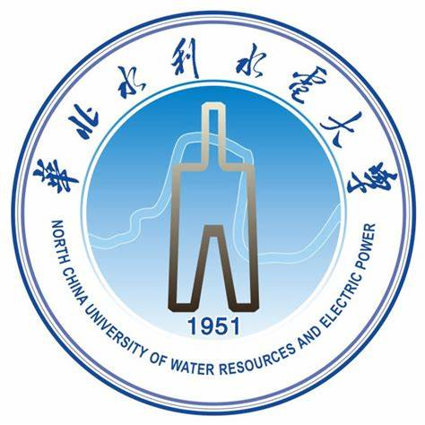

李定涵 (DingHan Li)
 |
本科生,预备党员 |
关于我
我目前就读于华北水利水电大学，班级指导老师是刘冉老师。
本人热衷计算机软件开发行业，学习能力强，适应能力强，有责任心，拥有团队合作开发精神，亦能独立完成任务。能熟练掌握C++，Java及Python等开发语言,Navicat和sqlserver数据库，vss源代码管理，具有良好的编程习惯和风格(xml标注，gui+设计等等)，熟悉软件架构及测试。
在校经历
|  | 本科 华北水利水电大学 (2019.09 ~ 2023.06)
|
工作经历
中国联通公司: 市场运营，对本专业在社会工作中的应用有了一定的了解
暑期补习班: 担任托教班老师，有良好的总结能力和极大的耐心
兴趣爱好
本人拥有广泛的兴趣爱好，以阅读思考运动社交等为主要爱好，有良好的生活与学习习惯；同时喜欢听音乐，旅游，对事物有独到的见解等。